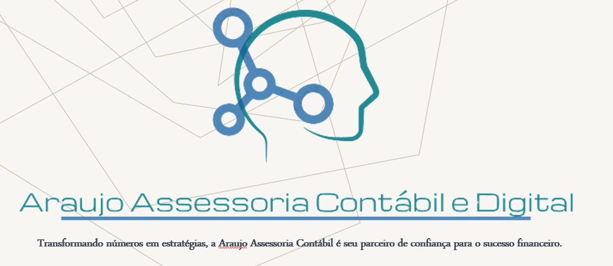

Escolher a melhor situação tributária para sua empresa é um processo decisivo e estratégico. Entender as opções disponíveis e considerar os impactos de longo prazo é essencial para um planejamento tributário eficaz. Com consultoria especializada e uma análise minuciosa, é possível tomar decisões assertivas que impulsionem o crescimento e a sustentabilidade do seu negócio.
As estratégias digitais são o alicerce para o sucesso no mundo contemporâneo dos negócios. Ao explorar o vasto ecossistema digital, foco em criar abordagens personalizadas que alinham tecnologia, análise de dados e compreensão do comportamento do consumidor. Utilizando uma gama de ferramentas, desde marketing de conteúdo até análises de dados avançadas, busco não apenas alcançar, mas também engajar o público-alvo de maneira significativa. A constante adaptação e o uso inovador das plataformas digitais são pilares fundamentais para criar experiências autênticas e impulsionar o crescimento e a relevância das marcas no cenário atual..

Graduado em Ciências Contábeis e Análise e Desenvolvimento de Sistemas, trazendo uma abordagem abrangente para o mundo empresarial. Procuro sempre expandir meu conhecimento com especializações em Gestão de Departamento Pessoal, Compliance Trabalhista, Auditoria, Contabilidade, Perícia Contábil, LGPD, Ciência de Dados e Big Data Analytics.
Saiba maisCom formação em CÃOputação, Análise de Dados e Marketing, combino habilidades técnicas e visão estratégica. Compreendo tecnologia, interpreto dados complexos e desenvolvo estratégias de marketing. Minha paixão por solucionar problemas e compreensão do comportamento do consumidor impulsionam abordagens inovadoras para o sucesso empresarial.
Saiba mais
Com uma formação em Marketing, sou apaixonado por compreender as nuances do comportamento do consumidor e desvendar as estratégias que impulsionam o sucesso das marcas. Minha jornada acadêmica me proporcionou não apenas conhecimento técnico, mas também uma mentalidade analítica e inovadora, buscando sempre criar campanhas impactantes e relevantes. Com habilidades em pesquisa de mercado, análise de dados e criação de conteúdo, busco constantemente adaptar-me às evoluções do mercado para entregar resultados sólidos e diferenciados.
Saiba maisCom especialização em análise financeira e tributária, minha expertise reside na decifração e otimização dos números por trás dos negócios. Ao combinar conhecimentos em finanças e legislação tributária, sou capaz de oferecer insights precisos e estratégicos para impulsionar a saúde financeira das empresas. Minha paixão por desvendar dados, identificar oportunidades de economia e proporcionar conformidade fiscal é essencial para garantir o sucesso e a eficiência dos processos financeiros de uma organização.
Saiba maisPara mais informações